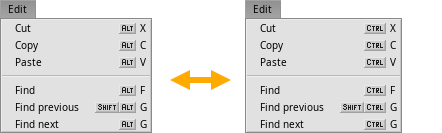

English
EnglishThe shortcut key
The Keymap preferences let you switch the standard ALT key to CTRL (Windows/Linux mode). This is a global switch, so for example quitting a program in the shell will then be done with ALT C instead the usual CTRL C.
This inconsistancy is one reason for the default ALT shortcut in Haiku.

Further reading:
Shortcuts and key combinations
Shortcuts and key combinations